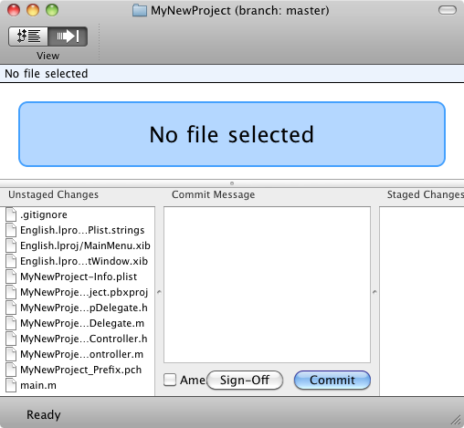
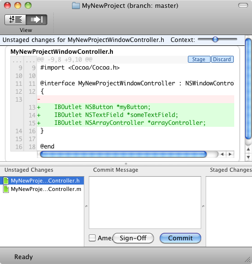

Please note: this article is part of the older "Objective-C era" on Cocoa with Love. I don't keep these articles up-to-date; please be wary of broken code or potentially out-of-date information. Read "A new era for Cocoa with Love" for more.
Version control for solo Mac developers
In this post, I'll take a quick look at how to keep your projects in git and how to manage that easily on the Mac. More importantly though, I'll take a look at why you'd want to do this, even if you're the only developer, you don't need to share your code, you don't have formalized releases that need to be tagged and you already have a backup system protecting your code.
Introduction
After my posts a few weeks back on deployment scripts, where I implored everyone to use version control systems for all projects, I received a few different emails asking about how I actually handle this.
The main points to learn in this post are:
- Every project you ever work on should be in version control
- Nothing needs to be centralized (you don't need a server) but you can use any computer as a server if you wish
- You can avoid the (often cryptic) command-line for most tasks
- I'll show you all the required steps
- I'll show you how it will help you as a solo developer, even if you don't need many of the traditional features of a version control system
Version control systems protect your work, help you review what you've done, help you share code if needed, work like a massive undo buffer when necessary and can help you keep your code tidy. Always use one.
Setting up git on your Mac
I recommend you use git for version control. Most modern, distributed, version control systems share a pretty similar feature and command set. The advantage with git is really that it's enjoying a lot of popularity at the moment and that popularity means there's plenty of documentation and how-to guides around to help out if you get lost. There are also some good tools around which make git use on the Mac more enjoyable — particularly GitX.
Installation
Download the git installer (as I write this, the current version is 1.7.3.3). Run the installer package.
Once that's done, you should set your username and email address (these will be tagged on all changes you make). Do this by opening the terminal and running the following commands:
git config --global user.name "My name in git"
git config --global user.email "myemailname@myemailaddress.com"Just replace "My name in git" and "myemailname@myemailaddress.com" with the name and email address you want to use.
GitX
I prefer to use GitX instead of git on the command-line where possible.
I've discussed this before but I consider the command-line and a terminal window a poor way of gathering structured information and getting feedback about multi-part tasks.
GitX is a good example of how a program can improve upon the information structure available on the command-line: it shows nice graphical diffs whenever you're browsing the repository or committing new changes, making browsing and committing much faster and easier.
Of course, this doesn't mean that all graphical user-interfaces are always better than the underlying command-line. I consider the Xcode 3 version control integration to be worse than the command-line because it simply isn't informative or robust enough.
Making your project into a git repository
As soon as you've created your Xcode project from the template, the next step should be creating the repository. To do this correctly involves the following three steps.
Add a .gitignore file
The following webpage:
Gives a ".gitignore" file suitable for use with Xcode. This will tell git to ignore build products and Xcode user-settings files that you don't really need to commit into your repository. You will need to save this file with the name ".gitignore" in the top level folder of your new Xcode project. Since you can't rename files to start with a "." in the Finder, you'll need to set the name using another program (i.e. rename from the Terminal or save from Xcode or TextEdit).
If you don't have a global .gitigore file set up, then you'll probably want to add the content of this file to your .gitignore as well:
The current version of this .gitignore file contains the line ".DS_Store?". This doesn't work for me unless I remove the question mark.
If you did want to set this up as a global .gitignore file, save it to ~/.gitignore and run the following in the Terminal:
git config --global core.excludesfile ~/.gitignoreSince Xcode projects are inherently Mac-only though, I prefer to put the Mac global ignore settings into the project's .gitignore so that any machine using this repository will automatically have all of these settings.
Create the repository
In GitX, select "New..." from the File menu and then choose the top level folder of your Xcode project. This will create the repository. It's as simple as that.
Outside of GitX, you can create a new repository with the following command in the Terminal:
git initAll files for tracking the repository are kept at the top-level of the repository (unlike older version control systems like svn or cvs which littered files in every directory). Most git files are kept in the .git directory.
Add all your files to the repository
Open the project's folder in GitX. The toolbar contains a two segment "View" button. The left side is the "Browse" mode, the right side is the "Commit" mode. Set the view mode to "Commit".
The window in GitX should look something like this screenshot. The bottom-left panel shows all the changes you haven't added to the repository.
To "stage" your changes (get them ready for a commit) select and double-click all the files you want to stage as a batch. In this case, select everything and double click. The files will all move to the "Staged Changes" area.
In the "Commit Message" in the center, enter a message describing this change. In this case: "Created new project from Xcode template." would be a good message. Hit the "Commit" button and these files will all be added to the repository with the commit message provided.
You can then use the "View" button in the toolbar again to select the "Browse" mode. You should now have one update in the project's history on the "Master" branch, with you as the "Author". The two segment control in the bottom-center of the window in Browse mode will allow you to switch between a "diff" of changes in the selected update (left side of the segment) and browsing the state of the repository as it was in the selected version (right side of the segment).
In the Terminal, you can stage new additions and removals with the following commands:
git add [path to file or files to add to the repository]
git rm [path to file or files to remove from the repository]And you can commit additions and removals and commit other changes with the following command:
git commit -m "Commit message here" [path to file or files whose changes you want to commit]Keep it up-to-date
The remaining step required once your project is in a repository, is to keep it up-to-date. You do this by committing changes on a regular basis.
How often should you commit changes? As often as you can. At a minimum, you should commit, when any of the following happens:
- You finish a feature
- You fix a bug
- When you get up for lunch or at the end of the day
- When you distribute a release to anyone else
It's helpful to have your processes for marking bugs as fixed or deploying code for distribution contain the requirement that related changes be committed and tagged in your repository. This ensures that you can check the exact code state at the time you fixed any bug or made any distribution.
For any other type of commit, don't be worried about committing bad or partially functional changes; remember, this is your own repository and you're not going to interfere with anyone else by committing a half-implemented feature (just don't push these changes to another computer). If you plan to make big changes that may leave the code non-functional for the duration of the changes, create a branch, check out the branch and commit your incremental implementation on the branch.
Updating the repository works exactly like the original add shown above but it is here where GitX begins to really help the commit process:
When you select the changed files during the commit process, the changes since the last commit are shown in the panel above. Here, I've added some interface outlets to the header file.
Depending on whether or not you have any formal feature list, development roadmap or bug tracking system, the commit message should now reflect who requested this change and why. For example, if the behavior of "myButton", "someTextField" and "arrayController" are described in items 1, 5 and 25 of your Feature List, then the commit message for the above changes might read: "Features 1, 5, 25: added interface outlets between the window controller and views".
The message for your commit message should always answer the question: "What was I thinking at the time? What problem was I trying to solve?"
Cloning this repository on another computer
Eventually, you'll run into a situation where you'll need to build and test on another machine. For the Mac you want to use as the source of the clone, make sure that "Remote Login" sharing is enabled in the "System Preferences".
Assuming the destination computer correctly has git installed and configured, open a Terminal window on the destination and enter the following command:
git clone ssh://username.on.source.computer@ip.address.of.source.computer/full/path/to/project/directoryThis will completely clone the repository and its history for use on the destination computer.
Once you've cloned in this way, the source computer's address is given the name "origin". This means that if you need to pull new changes from the source to the destination again, you can use the following command:
git pull origin masterThis will pull all changes on the "master" branch (the default or trunk branch). Similarly you can push to send changes back again:
git push origin masterIf you're using a number of different computers and you want to push and pull between them, you can either use the full ssh address again or you can give your different "remote" computers names:
git remote add anotherremote ssh://username.on.remote.computer@ip.address.of.remote.computer/full/path/to/project/directoryOnce you've done this, the name "anotherremote" will be usable within the current repository where any remote address is required (e.g. for push and pull commands).
Working with third-party projects
Do you need to include a third-party git sub-project in your project? Clone the third-party git repository into a subfolder of your repository. Git will refuse to commit a sub-repository into a parent repository. That's okay, just add the sub-project's folder name to your respository's .gitignore file. If you make change to this third-party repository, you will need to commit those separately by opening the third-party repository's folder instead of your own top-level folder.
Once you pull a third-party's repository, it's a good idea to immediately branch it and checkout under your new branch (you should never work on anyone else's master branch).
You can branch and checkout the new branch in GitX. While in "Browse" mode, hit the "Create Branch" button. Give you branch a name. Your new branch will appear as a tag on the most recent version in the History. To check out this new branch (so all your changes will appear on it) you need to right-click the branch's tag in the History display and select "Checkout branch". The title of the window will be updated to reflect the new current branch.
The advantage with keeping the third-party's repository is that if you make any changes, it is easy to see exactly what you've changed. You can also pull more changes from the master branch and then merge them with your own branch if you want to get updates for the project in future.
If you want this third-party project to be checked out automatically every time you clone your own repository, you can add it using the git "submodule" command:
git submodule add -b branchname third-party-repository-url destination_pathThis will add a .gitmodules file to the top of the repository. Commit this file and "third-party-repository-url" will be automatically cloned at "destination_path", checked out on the branch "branchname" when this repository is cloned.
You can pull and push changes from svn repositories using git-svn, which is part of git by default. Have a look at this if you need cross repository support. There's also a third-party project named git-hg for cloning Mercurial repositories into git (although it is a one-way sync and may not be highly robust at this time).
Other git features
This is really on the tip of what you can do in git. I haven't even touched on restoring a previous version, merging between branches or rolling back changes and undoing commits.
I don't have an encyclopedic knowledge of git commands. If I need to do anything more than what's listed in this post, I normally need to look up the correctly commands to handle it properly. That's not such a bad thing: but be aware of the sorts of action that git can handle for you so you don't end up manually doing something that should be automatic.
In any case, I think I've listed all of the operations you're likely to need on a daily basis. It should be a good start.
Developers who still don't use version control?
Many small developers still neglect to use version control for many of their projects. It's clear that the importance of good code management is not universal.
I realize that it's easy to learn the mechanics of writing code and building programs without learning much about the profession of being a software developer, so let me add here: you should consider a version control system an essential part of being a software developer.
This may seem a little strange to say, since it is obviously possible to create, build and release programs without using a version control system. In many respects, you may think that the features offered by a traditional version control system aren't really needed by a solo developer working on a small project. Reasons some developers give why they don't need version control:
- They already have backups made of your main development machine (Time Machine plus periodic, permanent, offsite backups)
- Are the only person working on a project so they don't need to share and integrate with other developers
- They don't have formal releases or regression tests that require regenerating output from earlier versions
However, there are some serious reasons why every developer should use version control.
More precise than Time Machine
If you rely on Time Machine to give you an archive of changes to your code, you'll fall victim to the limit resolution of Time Machine. While Time Machine has hourly backups for 24 hours, it only has daily backups for the next month and after a month it only has weekly backups.
If the build or feature you'd like to restore or re-instate falls in the gap between updates, you might not be able to pull it out of Time Machine. Worse still, your Time Machine volume will eventually run out of free space, so the oldest versions will start being removed. This will never happen in a version control system.
Additionally, a version control system contains a log for all changes, making them easier to find. You can also use tags to find important changes quickly.
You should use Time Machine too. Ultimately, your code is safest if your repositories are backed up to another hard drive. Additionally, you should make regular snapshots (as CDs/DVDs, encrypted disk images) of your repositories and store these offsite. For CDs/DVDs, store them in a fireproof safe, offsite somewhere. If you use encrypted disk images, upload them to an online storage location that guarantees high data integrity (uptime is not as critical as data integrity). If a fire burns down your home/office, it should never put more than 1 week's work at risk.
Provides a way of reviewing your own code changes
As a solo developer, you don't often have other developers who you can ask to review your code to ensure that all the changes make sense and nothing is accidentally deleted, removed or changed.
Reviewing the changes every time you need to make a commit allows you to do this for yourself.
As I said: every commit message should answer the question "What was I thinking at the time? What problem was I trying to solve?" If you can't actually answer this question, if you're not sure why the code changed, then this gives you the opportunity to work out what you were thinking and either remind yourself about the importance of the change or allow you to eliminate the change because it's unneeded.
Makes it easy to change to another machine for testing and then change back
If you ever need to test your code on another machine, it is quicker and more reliable to clone the repository on the new machine, make any changes you may require and then push them back to your primary machine.
Makes pulling the latest updates from a third-party much easier
As I mentioned, keeping third-party code in its repository makes pulling new changes to that third-party code and merging these updates with any changes of your own a lot easier.
Further, if these changes are to a GPL project and you need to make your own modifications publicly available, you can simply provide a diff from the repository as an easy way of publishing your changes.
Conclusion
Distributed version control systems like git make managing your own repositories easier than ever. You don't need a central location. You don't need administration.
Visual tools like GitX are also fantastic: you can easily track your changes and see what you've deliberately or accidentally done and commit or undo as appropriate.
Being a software developer (as opposed to a casual coder) is about managing the software development project and its assets over its lifecycle. Your version control system is one of the most important tools for doing this.
Even if you're only a casual developer, not a full-time developer, the logging, merging and tracking facilities offered by version control will save you effort over the course of any project with more than one edit. Use it.
Back to the Mac? 12 features from iOS I'd like to see in Lion